Snakes of Haiti
29 living snake species are recorded in Haiti in SnakeList: 0 venomous and 29 non-venomous, from 4 families.
- 29living species
- 29non-venomous
- 4families
Danger to people
- 0harmful to people
- 0dangerously venomous
- 0mildly venomous
- 0giant constrictors
- 29harmless
Harmful = dangerously venomous + giant constrictors. Harmless = not venomous and not a giant constrictor. Mildly venomous snakes have no serious bites to people documented. Any snake can bite.
These totals count the unique living snake species SnakeList records in Haiti. A species counts if it is recorded anywhere in the country, so not every snake lives in every part of it.
In SnakeList’s checklist filters
How many of the 29 living species here each filter in the SnakeList app picks out – tap a number to show only those snakes.
Snake family3 types, 4 families
Type
Family
Habitats6 habitat groups
Habitats are estimated from where each snake is recorded and what kind of snake it is, as in the app; a snake can count in several.
Characteristics0 venomous, 3 constrictors
- 0venomous
- 29non-venomous
- 0snake eaters
Constrictor and Non-constrictor count only snakes whose family or genus is documented as constricting or not; the rest are not documented.
Other filters0 popular, 20 rare
- 0popular
- 0exotic
- 0invasive
- 0common
- 0extinct
- 0harmful
- 29low risk
Species
Showing 29 species
- No photo yetBarahona Worm SnakeTyphlops syntherus
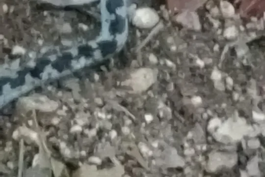
Brown Fanged SnakeIaltris dorsalis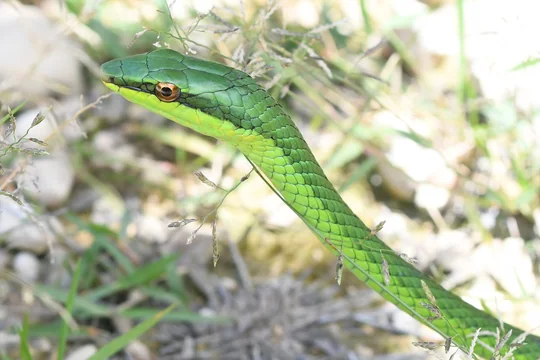
Catesby's Pointed SnakeUromacer catesbyi Cope's Antilles SnakeHypsirhynchus parvifrons
Cope's Antilles SnakeHypsirhynchus parvifrons Earthworm Blind SnakeTyphlops lumbricalis
Earthworm Blind SnakeTyphlops lumbricalis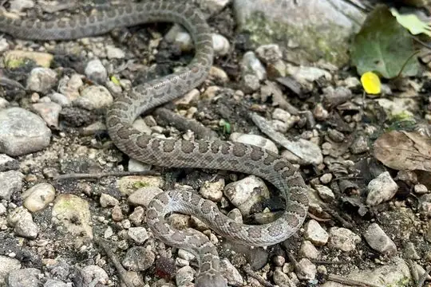
Ford’s BoaChilabothrus fordii- No photo yetGonave Island Worm SnakeTyphlops gonavensis
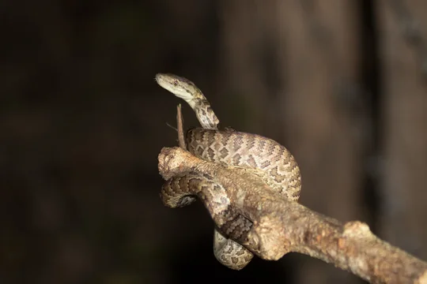
Haitian Boa (striatus)Chilabothrus striatus- No photo yetHaitian Border ThreadsnakeMitophis leptepileptus
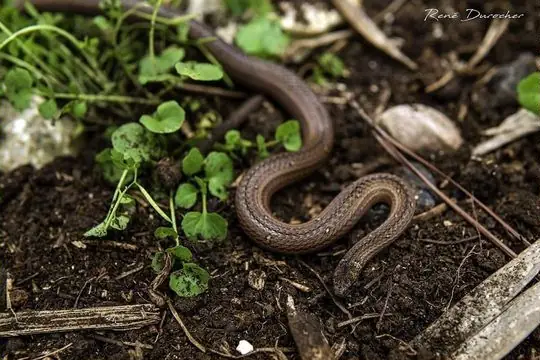
Haitian Ground SnakeIaltris haetianus- No photo yetHaitian Worm SnakeTyphlops tetrathyreus
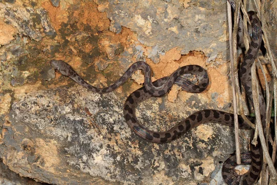
Hispaniola BoaChilabothrus gracilis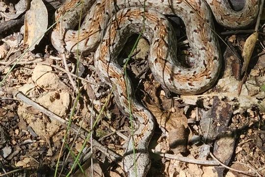
Hispaniola Cat-eyed SnakeHypsirhynchus ferox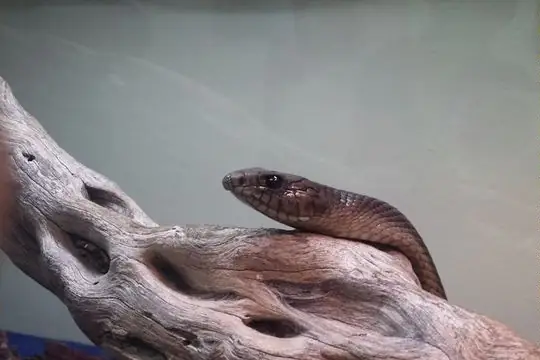
Hispaniola RacerHaitiophis anomalus Hispaniola Worm SnakeTyphlops pusillus
Hispaniola Worm SnakeTyphlops pusillus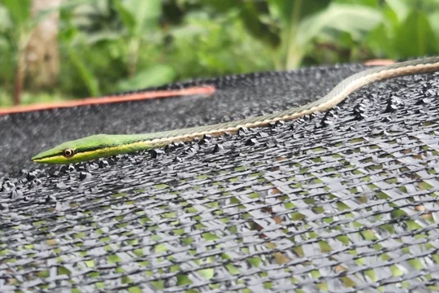
Island Pointed SnakeUromacer frenatus Island Worm SnakeTyphlops sulcatus
Island Worm SnakeTyphlops sulcatus- No photo yetLa Hotte BlindsnakeTyphlops agoralionis
- No photo yetLa Selle BlindsnakeTyphlops proancylops
- No photo yetLa Vega RacerHypsirhynchus melanichnus
- No photo yetParish's Fanged SnakeIaltris parishi
- No photo yetPestel BlindsnakeTyphlops sylleptor
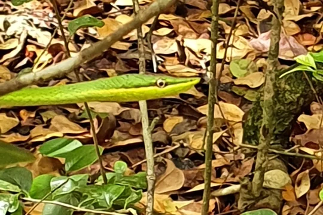
Pointed SnakeUromacer oxyrhynchus- No photo yetRichmond's Worm SnakeTyphlops capitulatus
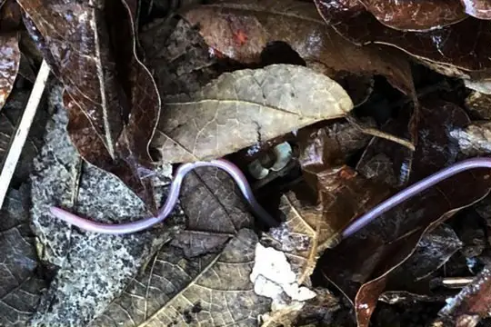
Samana ThreadsnakeMitophis calypso- No photo yetThomas' Blind SnakeMitophis pyrites
- No photo yetThomas' Worm SnakeTyphlops hectus
- No photo yetTiburon Hognosed RacerHypsirhynchus scalaris
- No photo yetTitan Worm SnakeTyphlops titanops
No snakes in Haiti match.
Haiti’s snakes in numbers
- Families: Typhlopidae 12, Colubridae 11, Boidae 3, Leptotyphlopidae 3.
- 7 are recorded in no other country or territory in SnakeList: Gonave Island Worm Snake, Haitian Border Threadsnake, Haitian Worm Snake, La Hotte Blindsnake, Parish's Fanged Snake, Pestel Blindsnake, Richmond's Worm Snake.
How precisely they are recorded
Of the 29 living species recorded in Haiti, 5 are recorded by department in SnakeList’s data; 24 are recorded only for Haiti as a whole, so the department pages list them as possible rather than recorded. SnakeList records each species by department, not by exact spot, so a species listed for a department may live in only part of it.
Departments
The departments where SnakeList records snakes, with how many living species are recorded in each. Each page has its species, venomous snakes, families, the species found only there, its cities and neighbours.
Cities
Its biggest cities, biggest first. SnakeList records snakes by department, not by city, so each city page shows the species recorded in its department and, separately, those only possible there - not species confirmed in the city.
- Port-au-Prince Ouest
- Carrefour Ouest
- Delmas 73 Ouest
- Pétionville Ouest
- Croix-des-Bouquets Ouest
No place matches that.